CEO · Odylytics
Lead a 10+ person team building digital infrastructure for public impact: AquaGuard, AirGuard and Includio. Ran 10+ customer interviews and 300+ surveys to find product-market fit.
CEO, Odylytics · Ho Chi Minh City
I’m Quan. I run Odylytics, scout startups as a Venture Analyst at B71, and study early action anticipation as a Research Assistant at HCMUT-URA. I turn field research into tools people use when it counts.


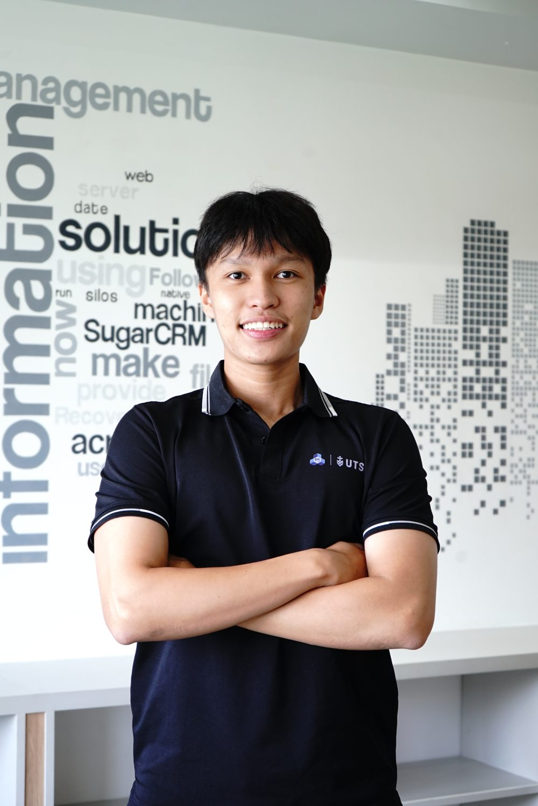
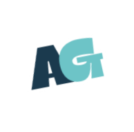
AquaGuard Odylytics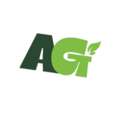
AirGuard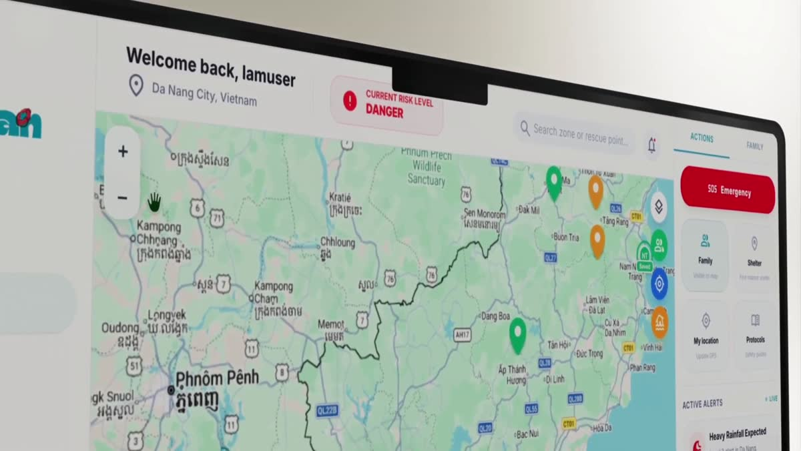
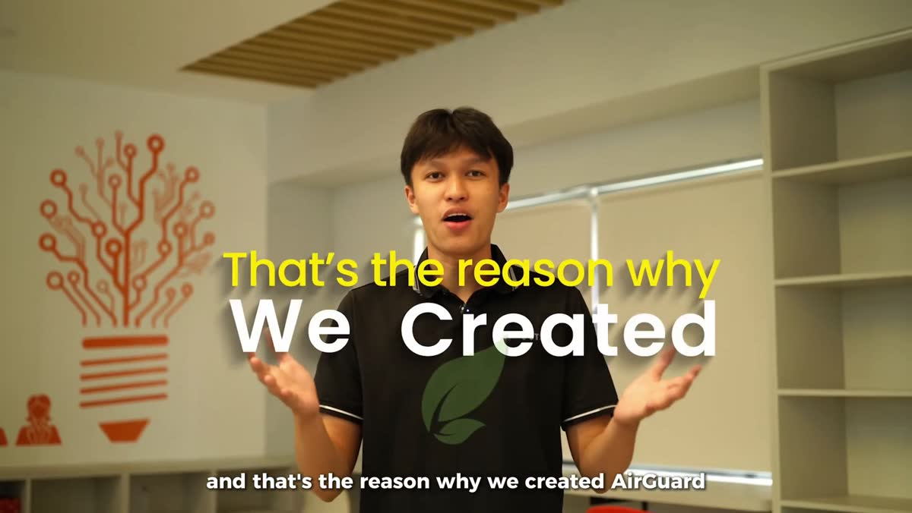
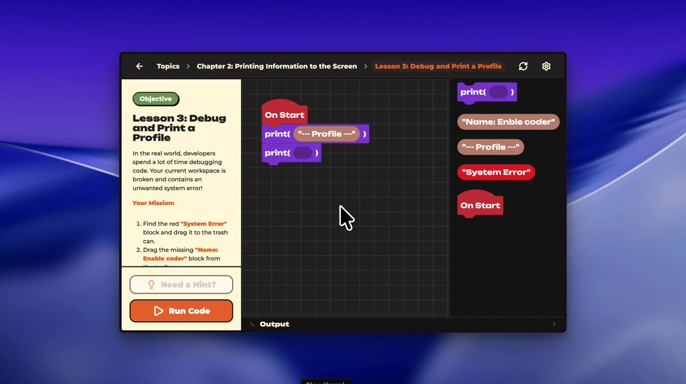
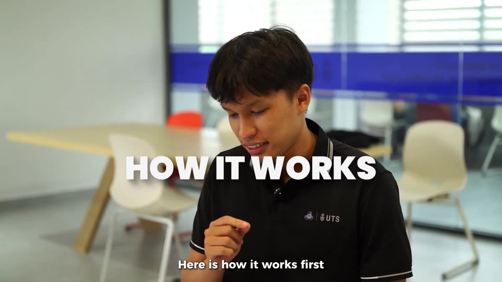
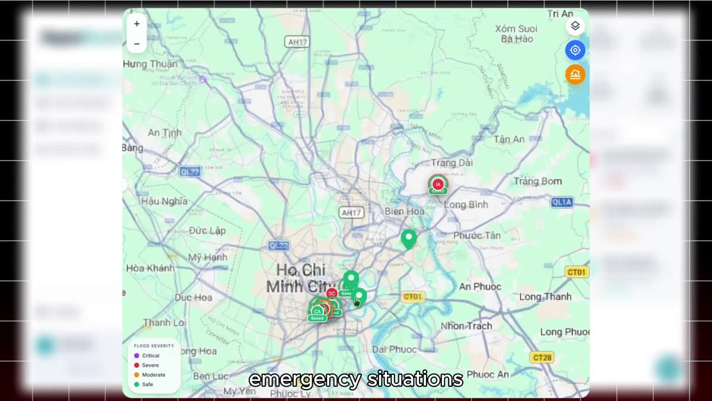
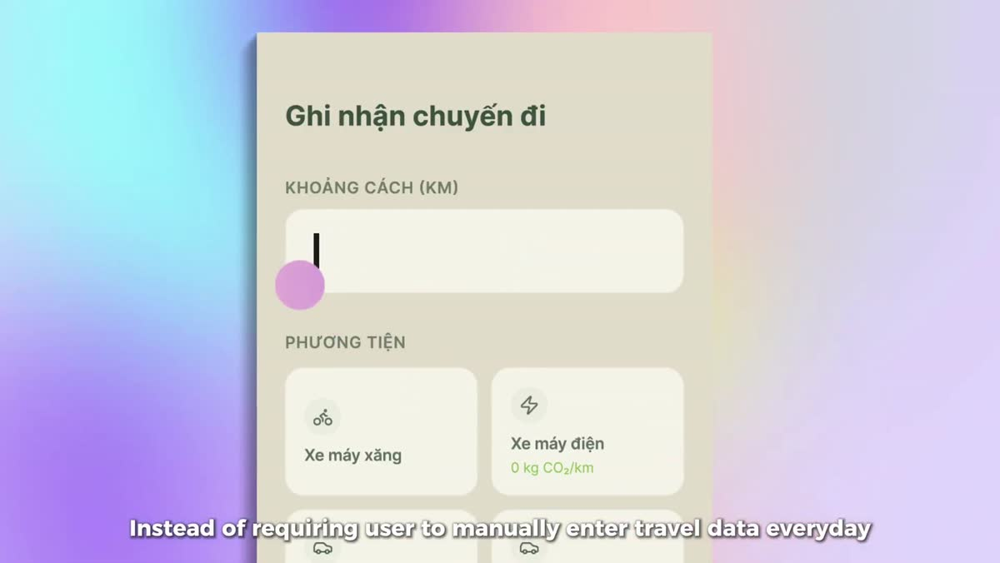

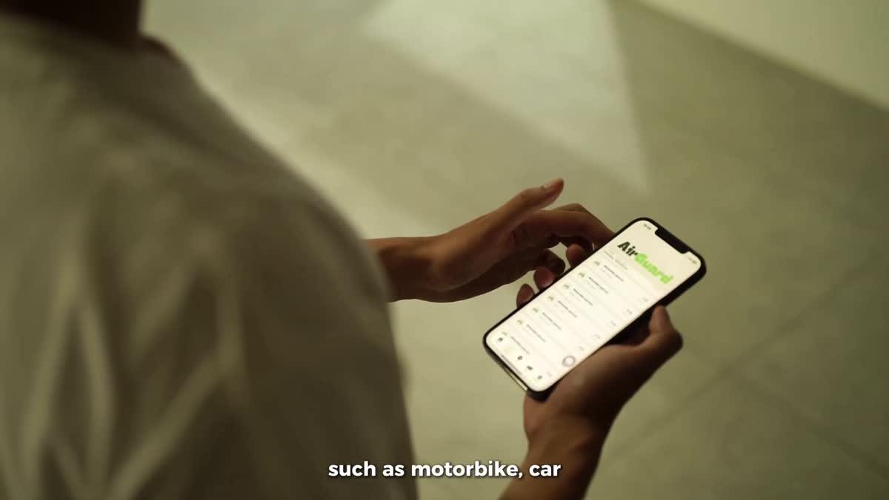
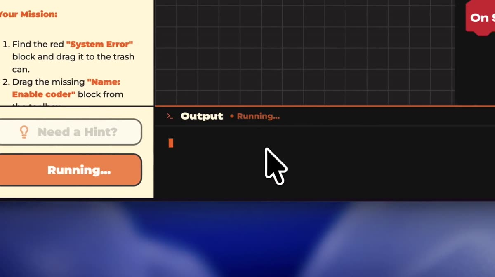
Built with, backed by and recognised at
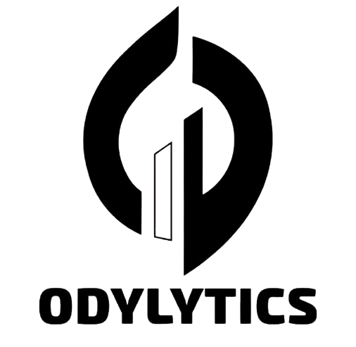
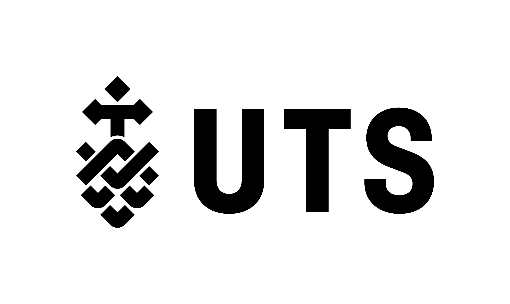

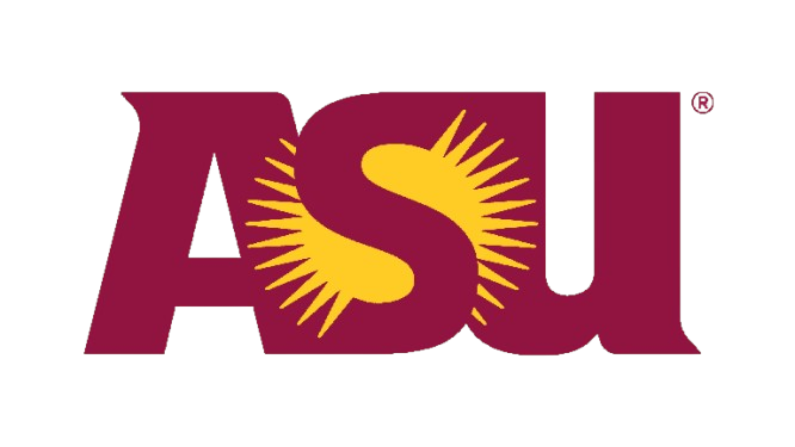
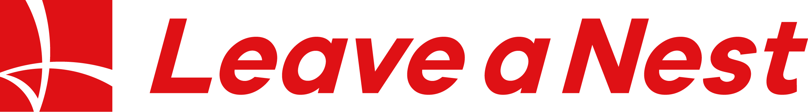
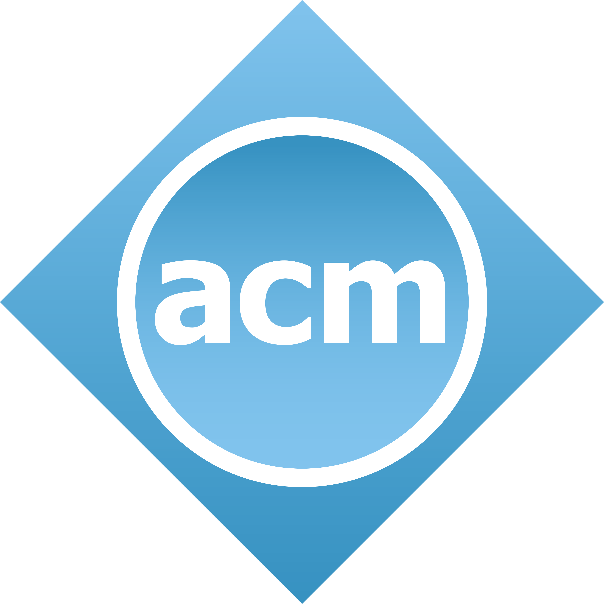

A flood alert, SOS and evacuation guidance platform I led from problem discovery to MVP with a 12+ person team. Citizens report incidents and share their location in real time; rescuers and local authorities see the same map.
Tested with 500+ users, 1M+ content views, USD 4,000+ in grants and ~USD 2,000 in AWS credits. First place at EPICS 8th, Arizona State University.
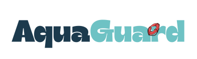
Every product I’ve shipped started in a lab or in the field, with interviews, surveys and a flood map, long before any code. I’m an AI student at UTS, studying in Ho Chi Minh City through HCMUT’s transnational programme, and I spend my weeks in three rooms at once.
Lead a 10+ person team building digital infrastructure for public impact: AquaGuard, AirGuard and Includio. Ran 10+ customer interviews and 300+ surveys to find product-market fit.
Scout and evaluate early-stage startups for the 84X acceleration programme, screening founders and market fit, and rebuild the internal sites behind the deal pipeline.
Co-author two deep-learning papers on skeleton-based early action anticipation and co-develop HCMUT’s Introduction to Computing textbook.
Odylytics’ second platform takes the AquaGuard mission from disaster response into climate resilience and public health: environmental monitoring and accessible air-quality insight for people, cities and communities.
Trips log themselves. A 4.8 km ride becomes 0.40 kg of CO₂, roughly four cups of milk tea, instead of a number nobody reads.
An inclusion-first hiring studio that connects employers with neurodivergent talent. Instead of bolting accessibility onto a standard process, Includio redesigns the interview itself so candidates can show what they can actually do.
Try the demo ↗
A hands-free coding platform for learners with upper-limb disabilities. I led a 6+ person team to an MVP built on facial gesture recognition and visual programming, keeping accessibility, usability and feasibility in balance.
“Having experienced severe flooding in Huế, I know how difficult it is to find reliable information and timely help. AquaGuard can help people report their location, request assistance, and stay informed.”
“What makes AquaGuard unique is its community-centered approach. Citizens can report incidents, share real-time information, and connect with rescuers, building more resilient communities.”
“A highly valuable and practical solution that can significantly enhance flood rescue and emergency response, with strong potential well beyond Vietnam.”
“By bringing citizens, rescuers, and local authorities together on one platform, AquaGuard could significantly strengthen flood emergency coordination in Vietnam.”
“A practical solution that can support humanitarian relief efforts and help communities respond more effectively during flood emergencies.”
At HCMUT’s URA Research Group I work on explainable models that anticipate an action from the first few frames of 3D skeleton motion, before it finishes.
Leveraging 3D Skeleton Motion for Early Action Anticipation via Spatio-Temporal Causal Modeling.
Nguyen, M., Tran, D. T. T., Nguyen, Q. M., Hac, Q. M., Quan, T. T.
IEEE KSE 2026 · B rank
Transition-Aware History Modeling for Skeleton-Based Early Action Anticipation.
Manhtuan Nguyen, Duong T. T. Tran, Quan M. Nguyen, Quan M. Hac, Xu Wang, Tho T. Quan
DAI 2026 · Q1
Nhập môn điện toán, the 2026 edition of HCMUT’s first-year computing textbook, co-developed with the URA Research Group.
Textbook · 2026 edition
HCMUT
Every paper, review and dataset in one place: 0009-0008-9621-1326.
National newspapers, TV and school features on the research, the essays and the flood-response work.
 Accepted to a top-20 U.S. university with an essay on Mekong Delta salinity
VnExpress · 2025
Accepted to a top-20 U.S. university with an essay on Mekong Delta salinity
VnExpress · 2025
 Student builds a flood-warning system to support rescue on mobile
Vietnam.vn · national news portal
Student builds a flood-warning system to support rescue on mobile
Vietnam.vn · national news portal
 Young Star Garden: education, disaster tech & social impact
HTV3 · TV interview
Young Star Garden: education, disaster tech & social impact
HTV3 · TV interview
 A Vietnamese student’s path to a top-20 U.S. university
Tài Năng Việt · profile
A Vietnamese student’s path to a top-20 U.S. university
Tài Năng Việt · profile
 LSTS student accepted to five U.S. universities
Lawrence S. Ting School · alumni
LSTS student accepted to five U.S. universities
Lawrence S. Ting School · alumni
From international design competitions to the Dean’s List. Tap a card to open the certificate.
Everything about where I study, what I build and how to work with me. Can’t find it? Email me.
I’m doing a Bachelor of Artificial Intelligence at the University of Technology Sydney (2025–28), GPA 6.6 / 7.0, WAM 88%, studying in Ho Chi Minh City through HCMUT’s transnational programme.
Transnational Education with UTS at HCMC University of Technology (2025–28): GPA 4.0 / 4.0, High Distinction.
Lawrence S. Ting School (2018–25): top 5%, SAT 1500, IELTS 8.0.
English and Vietnamese. I host HCMUT’s international programme events in both.
A social technology company building intelligent digital infrastructure that helps communities prepare for, respond to and recover from disasters and environmental challenges. Two platforms, one mission: AquaGuard and AirGuard, plus Includio.
Product strategy and execution for a 10+ person multidisciplinary team, partnerships, and the field work: 10+ customer interviews and 300+ surveys across three segments.
Grants of USD 4,000+, ~USD 2,000 in AWS credits, and a growing network of academic and social-impact partners including UTS, HCMUT and Leave a Nest.
odylytics@gmail.com. The team usually replies within 2–3 working days.
Predicting what action a person is doing from the first few frames of 3D skeleton motion, before the action finishes. Useful anywhere a late answer is a useless answer: safety, assistive tech, human-robot interaction.
An oral paper at IEEE KSE 2026 (accepted) and a second paper at DAI 2026 (under review). See the publications or ORCID.
I co-develop the 2026 edition of HCMUT’s Introduction to Computing textbook with the URA Research Group.
Yes: research collaborations, pilots of AquaGuard or AirGuard, and founding or venture roles. Tell me what your community needs.
At B71 I screen early-stage founders for the 84X acceleration programme: founder-market fit first, then evidence that the market actually hurts.
Ho Chi Minh City, Vietnam, working with Sydney.